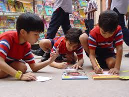

|  |
My school wants to inculcate in the students the habit of reading. With the advent of Television there is a decline in this very interesting and healthy habit of reading. The library has a large collection of books on different subjects. Each and every section is clearly demarcated, marked and the books are neatly stacked. Library periods make it mandatory for the students to peruse the material. The books are issued to students and some interesting activities are devised that makes reading mandatory and gradually the liking for reading books is kindled. In lower classes, the classroom is provided with multimedia kit, along with a vast collection of educational CDs, which provide very interesting information on various subjects. Students utilize these tools to gather information for their projects, which are specifically designed to make the use of CDs and Internet necessary